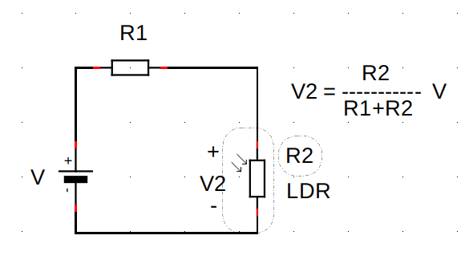

Ayuda a Mara en su aventura marciana
Task eleven. Mara se ha desorientado.
Caso práctico
El Ingenuity.... ¡ Menudo robot con alas de pacotilla !
Mientras ese roborcillo que vuela empieza a parlotear, Mara no puede dejar de pensar: "se lo tiene muy creído... No me toques, dice. No, no se te vayan a estropear tus aspitas tan delicaditas.... Menudo tipo. Claro, como fue el primer aparato que voló en Marte. En la Tierra no tendría nada que hacer; conozco yo unos drones primos míos capaces de volar el Atlántico de un tirón..."
Pero cuando el runrún de sus prejuicios se va acallando empieza a escuchar lo que sale del sintetizador de voz del Ingenuity...
- ¡Por favor! ¡Ayúdame! Mi rover Perseverance se ha quedado atascado, con una rueda enterrada en un pozo de arena con el que se ha tropezado en las faldas del crater Jezero.
- ¿Y eso cómo ha sido? - contesta Mara -.
- Al hacer fuerza para taladrar el suelo y recoger muestras, una de sus seis ruedas se ha hundido en un pozo de arena... ¡Y se está hundiendo cada vez más poco a poco!
- ¿Y qué puedo hacer?
- ¡Sígueme! ¡A ver si entre los dos podemos empujar y sacar su rueda de la trampa!
¡Y allá va Mara detrás del Ingenuity! Es de noche, no se ve bien, Mara ha abandonado el camino y lo único que la guía son esas luces brillantes que tiene ese cacharro volador que, encima, se ha elevado varios metros del suelo. Mara no tiene más remedio que guiarse por sus sensores de luz...
¡Por favor , Mara! No te quedes sin baterías... No te quedes sin baterías... Al menos ya está escarmentada, y lo primero que hace es mandar un mensaje a través de las radio balizas a Mili y a Nico. Para que ellos también se movilicen y vayan a ver qué pasa.
|
|
Where is Perseverance? (Dominio público) |
Arenas movedizas en wikipedia |
Encontrando datos del Perseverance
Resuelve todos los retos y completa el desafío. Pulsa en los números 1, 2 y 3 para seleccionar cada reto. Introduce los números que son las respuestas en la caja de texto y pulsa INTRO o el icono del tick. Si el número tiene decimales, el signo de separación de la parte decimal es el punto. Por ejemplo, trece coma veinticinco se escribiría 13.25
Aparecerán ayudas al minuto, a los cinco minutos y a los diez minutos de empezar el desafío. ¡Suerte!
1
¿Eres capaz de recordar cómo se llama el helicóptero que acompaña al Perseverance? Antes deberás superar tres retos. Necesitarás usar un buscador de internet para encontrar las respuestas correctas. ¡Vamos, atrévete!
Dispones de 15 minutos en total para superarlo.
Perseverance o Perseverancia —apodado Percy— es un vehículo robotizado diseñado y fabricado por el Laboratorio de Propulsión a Reacción para explorar el cráter Jezero de Marte como parte de la misión Mars 2020 del Programa de Exploración de Marte de la NASA. Fue lanzado el 30 de julio de 2020 a las 11:50 UTC1 desde Cabo Cañaveral en Florida y aterrizó en Marte el 18 de febrero de 2021 a las 20:56 UTC.2
Su diseño es casi idéntico al rover Curiosity; cuenta con siete instrumentos científicos para estudiar la superficie marciana empezando desde el cráter Jezero. También lleva a bordo veintitrés cámaras y dos micrófonos. En la misión también navegará el helicóptero explorador Ingenuity, que ayudará al Perseverance a encontrar posibles lugares para estudiar.
¿Eres capaz de encontrar el tamaño de las ruedas del Perseverance (diámetro) en centímetros?
¿Cuántos metros por hora es capaz de recorrer el Perseverance?
¿Qué tamaño de "escalón" es capaz de subir el Perseverance? Respuesta en centímetros.
%E9%B0%F3%E1%FB%F5%FC%F3%E6%E7%E0%F3%B0%A8%B0%B0%BE%B0%F3%E7%E6%FA%FD%E0%B0%A8%B0%B0%BE%B0%E6%EB%E2%F7%D5%F3%FF%F7%B0%A8%B0%F6%F7%E1%F3%F4%FB%FD%B0%BE%B0%F6%F7%E1%F3%F4%FB%FD%C6%FB%E6%FE%F7%B0%A8%B0-%D1%FD%FF%FD%B2%E1%F7%B2%FE%FE%F3%FF%F3%B2%F7%FE%B2%F1%FD%FF%E2%F3c%F7%E0%FD%B2%F6%F7%FE%B2%C2%F7%E0%E1%F7%E4%F7%E0%F3%FC%F1%F7%AD%B0%BE%B0%F6%F7%E1%F3%F4%FB%FD%C6%FB%FF%F7%B0%A8%A3%A7%BE%B0%F6%F7%E1%F3%F4%FB%FD%C6%EB%E2%F7%B0%A8%A2%BE%B0%F6%F7%E1%F3%F4%FB%FD%C1%FD%FE%E7%E6%FB%FD%FC%B0%A8%B0%DB%FC%F5%F7%FC%E7%FB%E6%EB%B0%BE%B0%F6%F7%E1%F3%F4%FB%FD%C1%FD%FE%E4%F7%F6%B0%A8%F4%F3%FE%E1%F7%BE%B0%F6%F7%E1%F3%F4%FB%FD%D6%F7%E1%F1%E0%FB%E2%E6%FB%FD%FC%B0%A8%B0%AE%FA%A6%B2%E1%E6%EB%FE%F7%AF%CE%B0%E6%F7%EA%E6%BF%F3%FE%FB%F5%FC%A8%B2%F8%E7%E1%E6%FB%F4%EB%A9%CE%B0%AC-%D7%E0%F7%E1%B2%F1%F3%E2%F3%E8%B2%F6%F7%B2%E0%F7%F1%FD%E0%F6%F3%E0%B2%F1a%FF%FD%B2%E1%F7%B2%FE%FE%F3%FF%F3%B2%F7%FE%B2%FA%F7%FE%FB%F1a%E2%E6%F7%E0%FD%B2%E3%E7%F7%B2%F3%F1%FD%FF%E2%F3c%F3%B2%F3%FE%B2%C2%F7%E0%E1%F7%E4%F7%E0%F3%FC%F1%F7%AD%B2%D3%FC%E6%F7%E1%B2%F6%F7%F0%F7%E0s%E1%B2%E1%E7%E2%F7%E0%F3%E0%B2%E6%E0%F7%E1%B2%E0%F7%E6%FD%E1%BC%B2%DC%F7%F1%F7%E1%FB%E6%F3%E0s%E1%B2%E7%E1%F3%E0%B2%E7%FC%B2%F0%E7%E1%F1%F3%F6%FD%E0%B2%F6%F7%B2%FB%FC%E6%F7%E0%FC%F7%E6%B2%E2%F3%E0%F3%B2%F7%FC%F1%FD%FC%E6%E0%F3%E0%B2%FE%F3%E1%B2%E0%F7%E1%E2%E7%F7%E1%E6%F3%E12%B2%F1%FD%E0%E0%F7%F1%E6%F3%E1%BC%B23%C4%F3%FF%FD%E1%BE%B2%F3%E6%E0%7B%E4%F7%E6%F7%B32%AE%BD%FA%A6%AC%CE%FC%AE%FA%A6%B2%E1%E6%EB%FE%F7%AF%CE%B0%E6%F7%EA%E6%BF%F3%FE%FB%F5%FC%A8%B2%F8%E7%E1%E6%FB%F4%EB%A9%CE%B0%AC%D6%FB%E1%E2%FD%FC%F7%E1%B2%F6%F7%B2%A3%A7%B2%FF%FB%FC%E7%E6%FD%E1%B2%F7%FC%B2%E6%FD%E6%F3%FE%B2%E2%F3%E0%F3%B2%E1%E7%E2%F7%E0%F3%E0%FE%FD%BC%AE%BD%FA%A6%AC%B0%BE%B0%FB%FC%E1%E6%E0%E7%F1%E6%FB%FD%FC%E1%D7%EA%F7%B0%A8%B0%AE%FA%A6%B2%E1%E6%EB%FE%F7%AF%CE%B0%E6%F7%EA%E6%BF%F3%FE%FB%F5%FC%A8%B2%F8%E7%E1%E6%FB%F4%EB%A9%CE%B0%AC%C0%F7%E1%E7%F7%FE%E4%F7%B2%E6%FD%F6%FD%E1%B2%FE%FD%E1%B2%E0%F7%E6%FD%E1%B2%EB%B2%F1%FD%FF%E2%FE%F7%E6%F3%B2%F7%FE%B2%F6%F7%E1%F3%F4%7F%FD%BC%B2%C2%E7%FE%E1%F3%B2%F7%FC%B2%FE%FD%E1%B2%FCh%FF%F7%E0%FD%E1%B2%A3%BE%B2%A0%B2%EB%B2%A1%B2%E2%F3%E0%F3%B2%E1%F7%FE%F7%F1%F1%FB%FD%FC%F3%E0%B2%F1%F3%F6%F3%B2%E0%F7%E6%FD%BC%B2%DB%FC%E6%E0%FD%F6%E7%F1%F7%B2%FE%FD%E1%B2%FCh%FF%F7%E0%FD%E1%B2%E3%E7%F7%B2%E1%FD%FC%B2%FE%F3%E1%B2%E0%F7%E1%E2%E7%F7%E1%E6%F3%E1%B2%F7%FC%B2%FE%F3%B2%F1%F3%F8%F3%B2%F6%F7%B2%E6%F7%EA%E6%FD%B2%EB%B2%E2%E7%FE%E1%F3%B2%DB%DC%C6%C0%DD%B2%FD%B2%F7%FE%B2%FB%F1%FD%FC%FD%B2%F6%F7%FE%B2%E6%FB%F1%F9%BC%B2%C1%FB%B2%F7%FE%B2%FCh%FF%F7%E0%FD%B2%E6%FB%F7%FC%F7%B2%F6%F7%F1%FB%FF%F3%FE%F7%E1%BE%B2%AE%E1%E2%F3%FC%B2%E1%E6%EB%FE%F7%AF%CE%B0%F1%FD%FE%FD%E0%A8%B2%B1%AA%A2%A2%A2%A2%A2%A9%CE%B0%AC%AE%E1%E6%E0%FD%FC%F5%AC%F7%FE%B2%E1%FB%F5%FC%FD%B2%F6%F7%B2%E1%F7%E2%F3%E0%F3%F1%FBa%FC%B2%F6%F7%B2%FE%F3%B2%E2%F3%E0%E6%F7%B2%F6%F7%F1%FB%FF%F3%FE%B2%F7%E1%B2%F7%FE%B2%E2%E7%FC%E6%FD%AE%BD%E1%E6%E0%FD%FC%F5%AC%AE%BD%E1%E2%F3%FC%AC%BC%B2%C2%FD%E0%B2%F7%F8%F7%FF%E2%FE%FD%BE%B2%E6%E0%F7%F1%F7%B2%F1%FD%FF%F3%B2%E4%F7%FB%FC%E6%FB%F1%FB%FC%F1%FD%B2%E1%F7%B2%F7%E1%F1%E0%FB%F0%FB%E0%7F%F3%B2%AE%E1%E2%F3%FC%B2%E1%E6%EB%FE%F7%AF%CE%B0%F1%FD%FE%FD%E0%A8%B2%B1%AA%A2%A2%A2%A2%A2%A9%CE%B0%AC%AE%E1%E6%E0%FD%FC%F5%AC%A3%A1%BC%A0%A7%AE%BD%E1%E6%E0%FD%FC%F5%AC%AE%BD%E1%E2%F3%FC%AC%AE%BD%FA%A6%AC%CE%FC%AE%FA%A6%B2%E1%E6%EB%FE%F7%AF%CE%B0%E6%F7%EA%E6%BF%F3%FE%FB%F5%FC%A8%B2%F8%E7%E1%E6%FB%F4%EB%A9%CE%B0%AC%D3%E2%F3%E0%F7%F1%F7%E0s%FC%B2%F3%EB%E7%F6%F3%E1%B2%F3%FE%B2%FF%FB%FC%E7%E6%FD%BE%B2%F3%B2%FE%FD%E1%B2%F1%FB%FC%F1%FD%B2%FF%FB%FC%E7%E6%FD%E1%B2%EB%B2%F3%B2%FE%FD%E1%B2%F6%FB%F7%E8%B2%FF%FB%FC%E7%E6%FD%E1%B2%F6%F7%B2%F7%FF%E2%F7%E8%F3%E0%B2%F7%FE%B2%F6%F7%E1%F3%F4%7F%FD%BC%B23%C1%E7%F7%E0%E6%F7%B3%AE%BD%FA%A6%AC%B0%BE%B0%FB%FC%E1%E6%E0%E7%F1%E6%FB%FD%FC%E1%B0%A8%B0%C0%F7%E1%E7%F7%FE%E4%F7%B2%E6%FD%F6%FD%E1%B2%FE%FD%E1%B2%E0%F7%E6%FD%E1%B2%EB%B2%F1%FD%FF%E2%FE%F7%E6%F3%B2%F7%FE%B2%F6%F7%E1%F3%F4%7F%FD%BC%B2%B0%BE%B0%E1%FA%FD%E5%DF%FB%FC%FB%FF%FB%E8%F7%B0%A8%E6%E0%E7%F7%BE%B0%F1%FA%F3%FE%FE%F7%FC%F5%F7%E1%D5%F3%FF%F7%B0%A8%C9%E9%B0%F6%F7%E1%F1%E0%FB%E2%E6%FB%FD%FC%B0%A8%B0%AE%FA%A6%B2%E1%E6%EB%FE%F7%AF%CE%B0%E6%F7%EA%E6%BF%F3%FE%FB%F5%FC%A8%B2%F8%E7%E1%E6%FB%F4%EB%A9%CE%B0%AC%C2%F7%E0%E1%F7%E4%F7%E0%F3%FC%F1%F72%FD2%C2%F7%E0%E1%F7%E4%F7%E0%F3%FC%F1%FB%F32%u2086%F3%E2%FD%F6%F3%F6%FD2%C2%F7%E0%F1%EB%u2086%B2%F7%E1%B2%E7%FC2%E4%F7%FA%7F%F1%E7%FE%FD%B2%E0%FD%F0%FD%E6%FB%E8%F3%F6%FD2%F6%FB%E1%F7c%F3%F6%FD%B2%EB%B2%F4%F3%F0%E0%FB%F1%F3%F6%FD%B2%E2%FD%E0%B2%F7%FE2%DE%F3%F0%FD%E0%F3%E6%FD%E0%FB%FD%B2%F6%F7%B2%C2%E0%FD%E2%E7%FE%E1%FBa%FC%B2%F3%B2%C0%F7%F3%F1%F1%FBa%FC2%E2%F3%E0%F3%B2%F7%EA%E2%FE%FD%E0%F3%E0%B2%F7%FE2%F1%E0s%E6%F7%E0%B2%D8%F7%E8%F7%E0%FD2%F6%F72%DF%F3%E0%E6%F72%F1%FD%FF%FD%B2%E2%F3%E0%E6%F7%B2%F6%F7%B2%FE%F3%B2%FF%FB%E1%FBa%FC2%DF%F3%E0%E1%B2%A0%A2%A0%A22%F6%F7%FE2%C2%E0%FD%F5%E0%F3%FF%F3%B2%F6%F7%B2%D7%EA%E2%FE%FD%E0%F3%F1%FBa%FC%B2%F6%F7%B2%DF%F3%E0%E6%F72%F6%F7%B2%FE%F32%DC%D3%C1%D3%BC%B2%D4%E7%F7%B2%FE%F3%FC%E8%F3%F6%FD%B2%F7%FE2%A1%A2%B2%F6%F7%B2%F8%E7%FE%FB%FD%B2%F6%F7%B2%A0%A2%A0%A22%F3%B2%FE%F3%E12%A3%A3%A8%A7%A2%B2%C7%C6%D1%A3%u2099%B2%F6%F7%E1%F6%F72%D1%F3%F0%FD%B2%D1%F3c%F3%E4%F7%E0%F3%FE2%F7%FC2%D4%FE%FD%E0%FB%F6%F32%EB%B2%F3%E6%F7%E0%E0%FB%E8a%B2%F7%FC%B2%DF%F3%E0%E6%F7%B2%F7%FE2%A3%AA%B2%F6%F7%B2%F4%F7%F0%E0%F7%E0%FD%B2%F6%F7%B2%A0%A2%A0%A32%F3%B2%FE%F3%E1%B2%A0%A2%A8%A7%A4%B2%C7%C6%D1%BC%A0%u2099%AE%BD%FA%A6%AC%CE%FC%AE%FA%A6%B2%E1%E6%EB%FE%F7%AF%CE%B0%E6%F7%EA%E6%BF%F3%FE%FB%F5%FC%A8%B2%F8%E7%E1%E6%FB%F4%EB%A9%CE%B0%AC%C1%E7%B2%F6%FB%E1%F7c%FD%B2%F7%E1%B2%F1%F3%E1%FB%B2%FB%F6%7B%FC%E6%FB%F1%FD%B2%F3%FE%B2%E0%FD%E4%F7%E02%D1%E7%E0%FB%FD%E1%FB%E6%EB%A92%F1%E7%F7%FC%E6%F3%B2%F1%FD%FC%B2%E1%FB%F7%E6%F72%FB%FC%E1%E6%E0%E7%FF%F7%FC%E6%FD%E1%B2%F1%FB%F7%FC%E6%7F%F4%FB%F1%FD%E12%E2%F3%E0%F3%B2%F7%E1%E6%E7%F6%FB%F3%E0%B2%FE%F3%B2%E1%E7%E2%F7%E0%F4%FB%F1%FB%F7%B2%FF%F3%E0%F1%FB%F3%FC%F3%B2%F7%FF%E2%F7%E8%F3%FC%F6%FD%B2%F6%F7%E1%F6%F7%B2%F7%FE2%F1%E0s%E6%F7%E0%B2%D8%F7%E8%F7%E0%FD%BC%B2%C6%F3%FF%F0%FB%7B%FC%B2%FE%FE%F7%E4%F3%B2%F3%B2%F0%FD%E0%F6%FD%B2%E4%F7%FB%FC%E6%FB%E6%E0%7B%E1%B2%F1s%FF%F3%E0%F3%E1%B2%EB%B2%F6%FD%E12%FF%FB%F1%E0a%F4%FD%FC%FD%E1%BC%B2%D7%FC%B2%FE%F3%B2%FF%FB%E1%FBa%FC%B2%E6%F3%FF%F0%FB%7B%FC%B2%FC%F3%E4%F7%F5%F3%E0s%B2%F7%FE%B2%FA%F7%FE%FB%F1a%E2%E6%F7%E0%FD%B2%F7%EA%E2%FE%FD%E0%F3%F6%FD%E02%DB%FC%F5%F7%FC%E7%FB%E6%EB%BE%B2%E3%E7%F7%B2%F3%EB%E7%F6%F3%E0s%B2%F3%FE2%C2%F7%E0%E1%F7%E4%F7%E0%F3%FC%F1%F72%F3%B2%F7%FC%F1%FD%FC%E6%E0%F3%E0%B2%E2%FD%E1%FB%F0%FE%F7%E1%B2%FE%E7%F5%F3%E0%F7%E1%B2%E2%F3%E0%F3%B2%F7%E1%E6%E7%F6%FB%F3%E0%BC%AE%BD%FA%A6%AC%CE%FC%AE%FA%A6%B2%E1%E6%EB%FE%F7%AF%CE%B0%E6%F7%EA%E6%BF%F3%FE%FB%F5%FC%A8%B2%F8%E7%E1%E6%FB%F4%EB%A9%CE%B0%AC%AE%E1%E6%E0%FD%FC%F5%AC-%D7%E0%F7%E1%B2%F1%F3%E2%F3%E8%B2%F6%F7%B2%F7%FC%F1%FD%FC%E6%E0%F3%E0%B2%F7%FE%B2%E6%F3%FF%F3c%FD%B2%F6%F7%B2%FE%F3%E1%B2%E0%E7%F7%F6%F3%E1%B2%F6%F7%FE%B2%C2%F7%E0%E1%F7%E4%F7%E0%F3%FC%F1%F7%B2%BA%F6%FBs%FF%F7%E6%E0%FD%BB%B2%F7%FC%B2%F1%F7%FC%E6%7F%FF%F7%E6%E0%FD%E1%AD%AE%BD%E1%E6%E0%FD%FC%F5%AC%AE%BD%FA%A6%AC%B0%BE%B0%E6%FB%E6%FE%F7%B0%A8%B0%D7%FC%F1%E7%F7%FC%E6%E0%F3%B2%F7%FE%B2%F6%F3%E6%FD%B0%BE%B0%E1%FD%FE%E7%E6%FB%FD%FC%B0%A8%B0%A7%A0%BC%A7%B0%BE%B0%E6%FB%FF%F7%C1%FA%FD%E5%B0%A8%BF%A3%BE%B0%F1%FE%E7%F7%E1%B0%A8%C9%E9%B0%F1%FE%E7%F7%B0%A8%B0%FA%E6%E6%E2%E1%A8%BD%BD%F7%E1%BC%E5%FB%F9%FB%E2%F7%F6%FB%F3%BC%FD%E0%F5%BD%E5%FB%F9%FB%BD%C2%F7%E0%E1%F7%E4%F7%E0%F3%FC%F1%F7%B0%BE%B0%E6%FB%FF%F7%B0%A8%A3%EF%BE%E9%B0%F1%FE%E7%F7%B0%A8%B0%FA%E6%E6%E2%E1%A8%BD%BD%FF%F3%E0%E1%BC%FC%F3%E1%F3%BC%F5%FD%E4%BD%FF%F3%E0%E1%A0%A2%A0%A2%BD%E1%E2%F3%F1%F7%F1%E0%F3%F4%E6%BD%E0%FD%E4%F7%E0%BD%B0%BE%B0%E6%FB%FF%F7%B0%A8%A7%EF%BE%E9%B0%F1%FE%E7%F7%B0%A8%B0%FA%E6%E6%E2%E1%A8%BD%BD%FF%F3%E0%E1%BC%FC%F3%E1%F3%BC%F5%FD%E4%BD%FF%F3%E0%E1%A0%A2%A0%A2%BD%E1%E2%F3%F1%F7%F1%E0%F3%F4%E6%BD%E0%FD%E4%F7%E0%BD%E5%FA%F7%F7%FE%E1%BD%B0%BE%B0%E6%FB%FF%F7%B0%A8%A3%A2%EF%CF%EF%BE%E9%B0%F6%F7%E1%F1%E0%FB%E2%E6%FB%FD%FC%B0%A8%B0%AE%FA%A6%AC-%D1%E7s%FC%E6%FD%E1%B2%FF%F7%E6%E0%FD%E1%B2%E2%FD%E0%B2%FA%FD%E0%F3%B2%F7%E1%B2%F1%F3%E2%F3%E8%B2%F6%F7%B2%E0%F7%F1%FD%E0%E0%F7%E0%B2%F7%FE%B2%C2%F7%E0%E1%F7%E4%F7%E0%F3%FC%F1%F7%AD%AE%BD%FA%A6%AC%B0%BE%B0%E6%FB%E6%FE%F7%B0%A8%B0%C4%F7%FE%FD%F1%FB%F6%F3%F6%B2%F6%F7%FE%B2%E2%F7%E0%E1%F7%E4%F7%E0%F3%FC%F1%F7%B0%BE%B0%E1%FD%FE%E7%E6%FB%FD%FC%B0%A8%B0%A3%A7%A0%B0%BE%B0%E6%FB%FF%F7%C1%FA%FD%E5%B0%A8%BF%A3%BE%B0%F1%FE%E7%F7%E1%B0%A8%C9%E9%B0%F1%FE%E7%F7%B0%A8%B0%FA%E6%E6%E2%E1%A8%BD%BD%F7%E1%BC%E5%FB%F9%FB%E2%F7%F6%FB%F3%BC%FD%E0%F5%BD%E5%FB%F9%FB%BD%C2%F7%E0%E1%F7%E4%F7%E0%F3%FC%F1%F7%B0%BE%B0%E6%FB%FF%F7%B0%A8%A3%EF%BE%E9%B0%F1%FE%E7%F7%B0%A8%B0%FA%E6%E6%E2%E1%A8%BD%BD%FF%F3%E0%E1%BC%FC%F3%E1%F3%BC%F5%FD%E4%BD%FF%F3%E0%E1%A0%A2%A0%A2%BD%E1%E2%F3%F1%F7%F1%E0%F3%F4%E6%BD%E0%FD%E4%F7%E0%BD%B0%BE%B0%E6%FB%FF%F7%B0%A8%A1%EF%BE%E9%B0%F1%FE%E7%F7%B0%A8%B0%FA%E6%E6%E2%E1%A8%BD%BD%FF%F3%E0%E1%BC%FC%F3%E1%F3%BC%F5%FD%E4%BD%FF%F3%E0%E1%A0%A2%A0%A2%BD%E1%E2%F3%F1%F7%F1%E0%F3%F4%E6%BD%E0%FD%E4%F7%E0%BD%E5%FA%F7%F7%FE%E1%BD%B0%BE%B0%E6%FB%FF%F7%B0%A8%A7%EF%CF%EF%BE%E9%B0%F6%F7%E1%F1%E0%FB%E2%E6%FB%FD%FC%B0%A8%B0%AE%FA%A6%AC-%C3%E7%7B%B2%E6%F3%FF%F3c%FD%B2%F6%F7%B2%CE%B0%F7%E1%F1%F3%FEa%FC%CE%B0%B2%F7%E1%B2%F1%F3%E2%F3%E8%B2%F6%F7%B2%E1%E7%F0%FB%E0%B2%F7%FE%B2%C2%F7%E0%E1%F7%E4%F7%E0%F3%FC%F1%F7%AD%B2%C0%F7%E1%E2%E7%F7%E1%E6%F3%B2%F7%FC%B2%F1%F7%FC%E6%7F%FF%F7%E6%E0%FD%E1%BC%B4%FC%F0%E1%E2%A9%AE%BD%FA%A6%AC%B0%BE%B0%E6%FB%E6%FE%F7%B0%A8%B0%D7%E1%F1%F3%FE%FD%FC%F7%E1%B2%E3%E7%F7%B2%E2%E7%F7%F6%F7%B2%E1%E7%F0%FB%E0%BC%B0%BE%B0%E1%FD%FE%E7%E6%FB%FD%FC%B0%A8%B0%A6%A2%B0%BE%B0%E6%FB%FF%F7%C1%FA%FD%E5%B0%A8%BF%A3%BE%B0%F1%FE%E7%F7%E1%B0%A8%C9%E9%B0%F1%FE%E7%F7%B0%A8%B0%FA%E6%E6%E2%E1%A8%BD%BD%F7%E1%BC%E5%FB%F9%FB%E2%F7%F6%FB%F3%BC%FD%E0%F5%BD%E5%FB%F9%FB%BD%C2%F7%E0%E1%F7%E4%F7%E0%F3%FC%F1%F7%B0%BE%B0%E6%FB%FF%F7%B0%A8%A3%EF%BE%E9%B0%F1%FE%E7%F7%B0%A8%B0%FA%E6%E6%E2%E1%A8%BD%BD%FF%F3%E0%E1%BC%FC%F3%E1%F3%BC%F5%FD%E4%BD%FF%F3%E0%E1%A0%A2%A0%A2%BD%E1%E2%F3%F1%F7%F1%E0%F3%F4%E6%BD%E0%FD%E4%F7%E0%BD%B0%BE%B0%E6%FB%FF%F7%B0%A8%A1%EF%BE%E9%B0%F1%FE%E7%F7%B0%A8%B0%FA%E6%E6%E2%E1%A8%BD%BD%FF%F3%E0%E1%BC%FC%F3%E1%F3%BC%F5%FD%E4%BD%FF%F3%E0%E1%A0%A2%A0%A2%BD%E1%E2%F3%F1%F7%F1%E0%F3%F4%E6%BD%E0%FD%E4%F7%E0%BD%E5%FA%F7%F7%FE%E1%BD%B0%BE%B0%E6%FB%FF%F7%B0%A8%A7%EF%CF%EF%CF%BE%B0%E6%FB%E6%FE%F7%B0%A8%B0%B0%BE%B0%FF%E1%F5%E1%B0%A8%E9%B0%FF%E1%F5%C1%E6%F3%E0%E6%D5%F3%FF%F7%B0%A8%B0%C2%E7%FE%E1%F7%B2%F3%E3%E7%7F%B2%E2%F3%E0%F3%B2%F7%FF%E2%F7%E8%F3%E0%B0%BE%B0%FF%E1%F5%C1%E7%F0%FF%FB%E6%B0%A8%B0%D7%FC%E4%FB%F3%E0%B0%BE%B0%FF%E1%F5%DB%FC%F4%FD%E0%FF%F3%E6%FB%FD%FC%DE%FD%FD%F9%FB%FC%F5%B0%A8%B03%D5%F7%FC%FB%F3%FE%B3%B2%DE%F3%B2%FB%FC%F4%FD%E0%FF%F3%F1%FBa%FC%B2%E3%E7%F7%B2%F7%E1%E6%F3%F0%F3%B2%F0%E7%E1%F1%F3%FC%F6%FD%B0%BE%B0%FF%E1%F5%C2%FE%F3%EB%C1%E6%F3%E0%E6%B0%A8%B0%C2%E7%FE%E1%F7%B2%F3%E3%E7%7F%B2%E2%F3%E0%F3%B2%F8%E7%F5%F3%E0%B0%BE%B0%FF%E1%F5%DF%FB%FC%FB%FF%FB%E8%F7%B0%A8%B0%DF%FB%FC%FB%FF%FB%E8%F3%E0%B0%BE%B0%FF%E1%F5%DF%F3%EA%FB%FF%FB%E8%F7%B0%A8%B0%DF%F3%EA%FB%FF%FB%E8%F3%E0%B0%BE%B0%FF%E1%F5%C6%FB%FF%F7%B0%A8%B0%C6%FB%F7%FF%E2%FD%B2%E2%FD%E0%B2%E2%E0%F7%F5%E7%FC%E6%F3%B0%BE%B0%FF%E1%F5%DC%FD%DB%FF%F3%F5%F7%B0%A8%B0%C2%E0%F7%F5%E7%FC%E6%F3%B2%E1%FB%FC%B2%FB%FFs%F5%F7%FC%F7%E1%B0%BE%B0%FF%E1%F5%C1%E7%F1%F1%F7%E1%E1%F7%E1%B0%A8%B03%D1%FD%E0%E0%F7%F1%E6%FD%B3%B2%EE%B23%D7%EA%F1%F7%FE%F7%FC%E6%F7%B3%B2%EE%B23%D5%F7%FC%FB%F3%FE%B3%B2%EE%B23%DF%E7%EB%B2%F0%FB%F7%FC%B3%B2%EE%B23%C2%F7%E0%F4%F7%F1%E6%FD%B3%B0%BE%B0%FF%E1%F5%D4%F3%FB%FE%E7%E0%F7%E1%B0%A8%B03%DC%FD%B2%F7%E0%F3%B2%F7%E1%FD%B3%B2%EE%B23%DB%FC%F1%FD%E0%E0%F7%F1%E6%FD%B3%B2%EE%B23%DC%FD%B2%F7%E1%B2%F1%FD%E0%E0%F7%F1%E6%FD%B3%B2%EE%B23%DE%FD%B2%E1%F7%FC%E6%FB%FF%FD%E1%B3%B2%EE%B23%D7%E0%E0%FD%E0%B3%B0%BE%B0%FF%E1%F5%DB%FC%F4%FD%E0%FF%F3%E6%FB%FD%FC%B0%A8%B0%DB%FC%F4%FD%E0%FF%F3%F1%FBa%FC%B0%BE%B0%FF%F5%E1%C1%FD%FE%E7%E6%FB%FD%FC%B0%A8%B0%C1%FD%FE%E7%F1%FBa%FC%B0%BE%B0%FF%E1%F5%D6%F3%E6%F7%B0%A8%B0%D4%F7%F1%FA%F3%B0%BE%B0%FF%E1%F5%D6%F7%E1%F3%F4%FB%FD%B0%A8%B0%D6%F7%E1%F3%F4%7F%FD%B0%BE%B0%FF%E1%F5%D1%FA%F3%FE%FE%F7%FC%F5%F7%B0%A8%B0%C0%F7%E6%FD%B0%BE%B0%FF%E1%F5%D1%FA%F3%FE%FE%F7%FC%F5%F7%E1%D1%FD%FF%E2%FE%F7%E6%F7%F6%B0%A8%B0%C0%F7%E6%FD%E1%B2%F1%FD%FF%E2%FE%F7%E6%F3%F6%FD%E1%B0%BE%B0%FF%E1%F5%C1%E6%F3%E0%E6%C6%FB%FF%F7%B0%A8%B0%DB%FC%FB%F1%FB%FD%B2%F6%F7%E1%F3%F4%7F%FD%B0%BE%B0%FF%E1%F5%C0%F7%F3%F6%C6%FB%FF%F7%B0%A8%B0%DE%F7%F7%B2%F7%FE%B2%F6%F7%E1%F3%F4%7F%FD%B2%EB%BE%B2%F1%E7%F3%FC%F6%FD%B2%F7%E1%E6%7B%E1%B2%FE%FB%E1%E6%FD%BE%B2%E2%E7%FE%E1%F3%B2%E1%FD%F0%E0%F7%B2%E7%FC%B2%E0%F7%E6%FD%B2%E2%F3%E0%F3%B2%F8%E7%F5%F3%E0%BC%B0%BE%B0%FF%E1%F5%D1%FA%F3%FE%FE%F7%FC%F5%F7%E1%D3%FE%FE%D1%FD%FF%E2%FE%F7%E6%F7%F6%B0%A8%B03%DA%F3%E1%B2%E0%F7%E1%E7%F7%FE%E6%FD%B2%E6%FD%F6%FD%E1%B2%FE%FD%E1%B2%E0%F7%E6%FD%E1%B3%B23%D1%FD%FF%E2%FE%F7%E6%F3%B2%F7%FE%B2%F6%F7%E1%F3%F4%7F%FD%B3%B0%BE%B0%FF%E1%F5%D6%F7%E1%F3%F4%FB%FD%C1%FD%FE%E4%F7%F6%B0%A8%B03%DA%F3%E1%B2%E0%F7%E1%E7%F7%FE%E6%FD%B2%F7%FE%B2%F6%F7%E1%F3%F4%7F%FD%B3%B2%C2%E7%FE%E1%F3%B2%E0%F7%FB%FC%FB%F1%FB%F3%E0%B2%E2%F3%E0%F3%B2%FC%E7%F7%E4%F3%B2%E2%F3%E0%E6%FB%F6%F3%BC%B0%BE%B0%FF%E1%F5%D6%F7%E1%F3%F4%FB%FD%C1%FD%FE%E4%F7%F6%A3%B0%A8%B03%D7%FC%FA%FD%E0%F3%F0%E7%F7%FC%F3%B3%B23%DA%F3%E1%B2%E0%F7%E1%E7%F7%FE%E6%FD%B2%F7%E1%E6%F7%B2%F6%F7%E1%F3%F4%7F%FD%B3%B0%BE%B0%FF%E1%F5%D7%FC%F6%C6%FB%FF%F7%B0%A8%B0%D7%FE%B2%E6%FB%F7%FF%E2%FD%B2%FA%F3%B2%F4%FB%FC%F3%FE%FB%E8%F3%F6%FD%B2%EB%B2%FC%FD%B2%FA%F3%E1%B2%E0%F7%E1%E7%F7%FE%E6%FD%B2%F7%FE%B2%F6%F7%E1%F3%F4%7F%FD%BC%B2%C2%E7%FE%E1%F3%B2%E1%FD%F0%E0%F7%B2%E0%F7%FB%FC%FB%F1%FB%F3%E0%B2%E2%F3%E0%F3%B2%FB%FC%E6%F7%FC%E6%F3%E0%FE%FD%B2%F6%F7%B2%FC%E7%F7%E4%FD%BC%B0%BE%B0%FF%E1%F5%C1%FD%FE%E7%E6%FB%FD%FC%D7%E0%E0%FD%E0%B0%A8%B0%C1%FD%FE%E7%F1%FBa%FC%B2%FB%FC%F1%FD%E0%E0%F7%F1%E6%F3%BC%B0%BE%B0%FF%E1%F5%C1%FD%FE%E7%E6%FB%FD%FC%D1%D7%E0%E0%FD%E0%B0%A8%B0%DE%F3%B2%E1%FD%FE%E7%F1%FBa%FC%B2%FC%FD%B2%F7%E1%B2%F1%FD%E0%E0%F7%F1%E6%F3%BC%B0%BE%B0%FF%E1%F5%D1%FA%F3%FE%FE%F7%FC%F5%F7%C1%FD%FE%E4%F7%F6%B0%A8%B03%DA%F3%E1%B2%E0%F7%E1%E7%F7%FE%E6%FD%B2%F7%E1%E6%F7%B2%E0%F7%E6%FD%B3%B23%C1%F7%FE%F7%F1%F1%FB%FD%FC%F3%B2%FD%E6%E0%FD%B3%B0%BE%B0%FF%E1%F5%D6%F7%E1%F3%F4%FB%FD%C0%F7%F0%FD%FD%E6%B0%A8%B0%D7%E1%E6%FD%B2%E0%F7%FB%FC%FB%F1%FB%F3%E0s%B2%F7%FE%B2%F8%E7%F7%F5%FD%B2%EB%B2%FF%FD%F6%FB%F4%FB%F1%F3%E0s%B2%E1%E7%B2%FA%FD%E0%F3%B2%F6%F7%B2%FB%FC%FB%F1%FB%FD%BC%B2-%D6%F7%E1%F7%F3%E1%B2%F1%FD%FC%E6%FB%FC%E7%F3%E0%AD%B0%BE%B0%FF%E1%F5%D1%FD%FF%E2%FE%F7%E6%F7%D3%FE%FE%D1%FA%F3%FE%FE%F7%FC%F5%F7%F6%B0%A8%B0%D3%FC%E6%F7%E1%B2%F6%F7%B2%E0%F7%E1%FD%FE%E4%F7%E0%B2%F7%FE%B2%F6%F7%E1%F3%F4%7F%FD%BE%B2%F6%F7%F0%F7%E1%B2%F1%FD%FF%E2%FE%F7%E6%F3%E0%B2%E6%FD%F6%FD%E1%B2%FE%FD%E1%B2%E0%F7%E6%FD%E1%BC%B0%BE%B0%FF%E1%F5%C1%FD%FE%E4%F7%F6%D1%FA%F3%FE%FE%F7%FC%F5%F7%B0%A8%B0%CB%F3%B2%FA%F3%E1%B2%F1%FD%FF%E2%FE%F7%E6%F3%F6%FD%B2%F7%E1%E6%F7%B2%E0%F7%E6%FD%BC%B0%BE%B0%FF%E1%F5%C5%E0%FB%E6%F7%D1%FA%F3%FE%FE%F7%FC%F5%F7%B0%A8%B0%C0%F7%E1%E7%F7%FE%E4%F7%B2%F7%E1%E6%F7%B2%E0%F7%E6%FD%B2%F7%B2%FB%FC%F6%FB%F1%F3%B2%E1%E7%B2%E1%FD%FE%E7%F1%FBa%FC%BC%B0%BE%B0%FF%E1%F5%D7%FC%F6%C6%FB%FF%F7%C0%F7%E1%E6%F3%E0%E6%B0%A8%B0%D7%FE%B2%E6%FB%F7%FF%E2%FD%B2%FA%F3%B2%F4%FB%FC%F3%FE%FB%E8%F3%F6%FD%B2%EB%B2%FC%FD%B2%FA%F3%E1%B2%E0%F7%E1%E7%F7%FE%E6%FD%B2%F7%FE%B2%F6%F7%E1%F3%F4%7F%FD%BC%B2%C2%E7%FE%E1%F3%B2%E1%FD%F0%E0%F7%B2%E0%F7%FB%FC%FB%F1%FB%F3%E0%B2%E2%F3%E0%F3%B2%FB%FC%E6%F7%FC%E6%F3%E0%FE%FD%B2%F6%F7%B2%FC%E7%F7%E4%FD%BC%B0%BE%B0%FF%E1%F5%C0%F7%F0%FD%FD%E6%B0%A8%B0%C0%F7%FB%FC%FB%F1%FB%F3%E0%B0%BE%B0%FF%E1%F5%DA%F7%FE%E2%B0%A8%B0%D3%EB%E7%F6%F3%B0%EF%EF
Su navegador no es compatible con esta herramienta.
Proceso para llevar a cabo la tarea
¿Qué sensores LDR uso?
Usando módulos de sensor LDR
|
Utilizaremos dos sensores LDR que conectaremos a nuestra placa. En el caso de tener un robot basado en Arduino usaremos dos cualesquiera de los pines analógicos (del A0 al A5).
|
|
Fabricando tu propio módulo sensor LDR
Si dispones de sensores LDR como los de la imagen, es posible fabricarte tu propio módulo de sensor. Para ello es necesario añadir una resistencia en serie y realizar algunos cálculos para determinar qué resistencia debo usar según el sensor LDR usado.Esto es necesario porque pueden, constructivamente, ser distintos. Normalmente se puede medir en oscuridad total una resistencia del orden de mega ohmios, bajando hasta los 100 Ohmios o menos a máxima intensidad luminosa.Para saber más, podemos acceder a páginas como la de "LDR o fotoresistor o fotoresistencia". |
|
|
Necesitaremos el diseño de un circuito del tipo divisor de tensiones (resistivo). Este circuito nos ofrecerá, midiendo entre los extremos de la fotorresistencia, valores distintos de tensión.
|
 |
Mediciones de resistencia
Soldando un módulo LDR
Comprueba el módulo con un pequeño programa en makecode para el robot Maqueen micro:bit.
|
En la placa del robot Maqueen micro:bit encontraremos unas conexiones dupont macho. Un conjunto de tres a la izquierda del robot (visto de frente), junto a la rueda, de colores negro, rojo y verde, marcadas con las etiquetas P0, P1 y P2. Conectamos el cable rojo al positivo de la conexión P1. El negro (gris en mi caso) al negativo de la conexión P1 y el cable amarillo al conector verde.
|
|
|
|
El programa lee de forma analógica el PIN 1 (bloque en AVANZADO >> PINES) y lo muestra en pantalla. Los valores son altos en oscuridad, cercanos al valor máximo de este tipo de lectura que es 1023. Al iluminar la escena normalmente baja (500~700 aprox.), y al iluminar el LDR intensamente baja mucho el valor. Para ilustrar esta bajada, se ha establecido un valor umbral de 200. Por debajo de 200, enciende el LED derecho del robot. Por encima de ese valor lo apaga. El efecto es que al iluminar con una linterna intensamente el LDR, el LED se enciende. |
||
Conexionado para el robot Maqueen micro:bit.
|
Después de comprobar cada uno de los módulos de sensores LDR que hemos fabricado, los conectaremos a los pines P0 y P1 respectivamente (ver NOTA). Una vez cargado el programa, los fijaremos a la placa controladora, uno a cada lado. Quizás una gomilla elástica te venga bien para colocarlos en su sitio, uno a cada lado Y ya tan sólo te queda diseñar el algoritmo... NOTA: experimentalmente he comprobado que P2 me da problemas; no sé si es un error de mi placa o que no puede usarse de la misma forma que los otros. |
|
|||||
|
¿Cuál es el derecho y cuál el izquierdo? Para no tener confusiones, lo mejor es mirar el Maqueen de frente, donde vemos el sensor de ultrasonidos. A nuestra izquierda (nuestra mano izquierda) colocamos P1 y a la derecha (nuestra derecha) colocamos P0. P1 debe controlar el motor contrario, el que está a nuestra derecha, y P0 el motor que está a nuestra izquierda. |
||||||
Razona el algoritmo
Para llegar a hacer este programa necesitas razonar el algoritmo. ¿Qué tal si diseñas un diagrama de flujo?
Orientaciones para desarrollar el algoritmo
Hay dos enfoques distintos a este programa:
-
Primero, establecer el umbral y, si en un LDR se recibe un valor inferior a ese umbral (mayor iluminación), el robot deberá girar hacia ese lado, lo que significa que el motor del lado contrario avanzará más rápido que el del lado del LDR. Estudia cada LDR colocado en cada uno de los pines y establece un umbral para ambos o un umbral para cada uno de ellos.
-
Segundo, no establecer el umbral y convenientemente calcular la velocidad de cada motor según la iluminación que recibe el LED. Para hacer los cálculos puede ser muy útil la función de mapeo.
-
Prueba ambos algoritmos. ¿Cuál te parece más eficaz? ¿Por qué?
Función de mapeo. Robot Maqueen micro:bit
|
|
Bloque en makecode: la variable LDRIZ, que toma valores desde un máximo maxLDRIZq hasta un mínimo de 2, se transforma a valores desde 20 hasta 50 proporcionalmente. El mapeo consigue un valor proporcional. |
Función de mapeo. Otros robots
|
|
Bloque en Arduinoblocks |
Función de mapeo. Código Arduino
Cómo trabajar
- Normalmente se trabaja en parejas o en pequeños grupos, con un robot y un ordenador para programarlo.
- Aunque tu compañero/a sea quien maneje el ordenador o el robot, intenta siempre entender lo que estáis programando o haciendo: las órdenes o bloques que se están usando, el tiempo que tardan en ejecutarse, el orden en el que se colocan los bloques en el programa...
- Compartir las ideas con los demás, colaborar en lograr el reto, no molestar a otros grupos si están probando o trabajando...
- Importante: averigua primero cómo funcionan los LDR por separado, cada uno en el pin P0 o P1 donde irán colocados. Anota los valores que van generando con el programa de testeo. Con toda esa información intenta desarrollar el algoritmo. Tienes que estructurar muy bien el algoritmo y el programa antes de que te funcione.
- Si no sale a la primera, no desanimarse. Es normal que haya que hacer varias pruebas hasta que salga.
Pistas
La clave para el éxito está en:
- Pensar siempre, a priori, qué estamos haciendo.
- Averiguar los bloques de programación necesarios.
- Deducir el diagrama de flujo ANTES de escribir el programa.
- Elige bien tus variables.
- Haz las pruebas de testeo necesarias antes de empezar a diseñar el algoritmo final.
- Sé estricto y concienzudo a la hora de organizar los sensores y su información.
- Haz las cosas paso a paso: no pasar al paso siguiente hasta no tener seguro el anterior.
Obra publicada con Licencia Creative Commons Reconocimiento No comercial Compartir igual 4.0